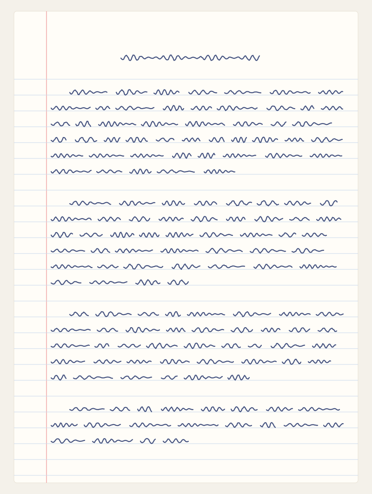

Transcreva sua redação manuscrita
Envie uma foto da folha e a inteligência artificial transforma em texto para você revisar.
- Boa iluminação, sem sombras sobre a folha
- Folha inteira enquadrada, de frente
- Foto nítida, com a letra legível
Revise a transcrição
Compare com a sua folha e corrija o que a leitura automática não entendeu.

Caminhos para combater a desinformação nas redes
Nunca foi tão fácil publicar uma informação, e nunca foi tão difícil saber se ela é verdadeira. As redes sociais aproximaram pessoas e ampliaram o acesso ao conhecimento, mas também se tornaram um terreno fértil para a desinformação.
Em primeiro lugar, é preciso reconhecer que a desinformação não se espalha apenas por má-fé. Muitas pessoas compartilham conteúdos falsos porque eles confirmam aquilo em que já acreditam, sem verificar a fonte.
Além disso, as plataformas têm responsabilidade, já que seus algoritmos priorizam o que gera engajamento, e não o que é confiável.
Portanto, cabe às escolas ensinar a checar informações e às plataformas sinalizar conteúdos duvidosos, para que as redes sejam um espaço de conhecimento.